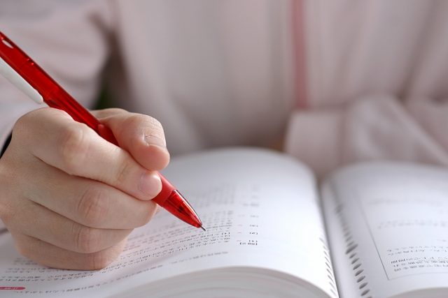

今日の話は少し肩の力を抜いて聞いてください
ひとつ冗談半分に言うのですが、我が子に勉強させたいと思ったら簡単な方法があります。この方法を実行すれば必ず子どもは自ら進んで勉強すること受け合いです。
「何そんな方法があるのか。早く教えて！」
「えーっ、ぜひとも聞かせて下さい」
そうですよね。親ならだれでもそう思いますよね。分かります。これは子どもの心理を逆手に取った方法といえます。
どんな心理かというとこういうことです。
子どもは－大人もそうだが－「やれ」と言われるとやりたくないものです。人は誰でも強制されると反発する。意思に反して何かを強制される。頭ごなしに命令される。するとますますやりたくなくなる。
やりたいことですらやる気をなくしてしまうという負のループにおちいりがちです。
だからいっそ子どもに勉強させようとしない。いや、もっと過激に子どもから勉強を取り上げてしまう！！子どもが勉強しようとすれば叱る（笑）参考書も買ってあげない。塾もやめさせる。家中に「勉強してほしくない」雰囲気をただよわせる（笑）。
するとどうなるでしょう。
子どもは焦って勉強をやり出すでしょう。
この方法の良いところは「勉強するな」といわれることで子どもが考え始めるところにあります。おそらく子どもは「勉強することの意味」をて初めて真剣に考えるでしょう。
そして勉強しないと「ヤバイ」という結論に達し自発的にやるようになるでしょう。強制され義務感でやるときは熱心になれないけれど禁止されるとやりたくなるという原理の応用です。
この方法は確実に効果的だと私は半ば本気で思っています。
私は子どものころ祖母から次のような話を聞きました。祖母が子どものとき家で勉強しようとすると、ランプの油がもったいないと親から叱られたといいます。そこで祖母は夜になって家族が寝静まるとひとり押し入れにこもってコッソリランプをかざして勉強したといいます。
同じような話は当時年輩の人から時々聞かされたのを覚えています。
マア、昔は－-特に農村の人々にとって－学校へ通うことや勉強することにあまり意味を見いだせなかったのでしょう。
実際、子どもたちが貴重な労働力である農村などでは「勉強などすると理屈ばかりコネ回す人間になる」と、役に立たない（？）勉強を忌み嫌っていたものです。
なので子どもたちは隠れて勉強していたわけです。きっと彼らは「親に隠れてする秘密の遊び」のような感覚で勉強をとらえていたのかも知れません。考えようによっては今の子どもたちより楽しんで勉強していた可能性が高い。
今の子どもたちは昔に比べたら信じられないほど勉強環境が整っています。親も世間も「勉強しなさい」の大合唱です。何もかもお膳立てされている今の子どもたちは、勉強に対するハングリー精神を失っているといえるでしょう。
「やらされる」勉強ほどつまらないものはないですからね。
良い環境が子どもをダメにする？
「じゃ、子どもに勉強を禁止すればやるようになるのか」と思った人はその時点でアウトです。
この方法（勉強禁止）が有効であるためには親が本気で「勉強するな」と思っていなければなりません。今どきそんな親はいないでしょう（笑）
本心は勉強してもらいたいと思っていながら「勉強するな」といわばメソッドとしてこの方法をとらえているなら逆効果にしかなりません。
良く親が子どもを発奮させようとして「やる気がないなら勉強しなくてもいいんだぞ
」とか「塾もやめていいぞ」などと言い、子どもに「じゃ塾やめるわ」とあっさり言われて（笑）あわてる人が後を絶ちませんが、口先だけの「勉強禁止」は脅しにもなりません。見透かされています。
逆説的にいえば
本気で「勉強なんかしなくてもいい」と勉強無用論が信念となっている人にしかこの手は使えないということです。
要するに「勉強禁止令」を出すことで子どもに勉強させようとする方法は、少なくとも現代の大多数の家庭にとっては現実的ではないということです。
ただ、この話から一つの重要な教訓を引き出すことは可能です。勉強環境が整えば整うほど、教育システムや設備が立派になるほどそれと反比例するように子どもたちの勉強意欲は減退するということです。
やはり勉強にもハングリー精神が必要なのです。
多くの親は子どもに「良い環境を」と願います。小さい頃は習い事をさせ、塾にも通わせ中学受験もさせようとします。
早期教育がよいと聞けば英語の幼児教室にも通わせます。参考書や問題集、私立に入れる費用など教育にお金を惜しむ親はあまりいません。至れり尽くせりです。
こうした環境整備（お膳立て）は、昔のように学校へ行きたくても行けなかった時代
に比べたら子どもたちにとって恵まれていると言える反面、肝心の学習意欲や学力そのものの向上にどれだけ貢献したのでしょうか。
確かに平均レベルの向上には役立っています。しかし、昔と比べてもまた諸外国との学力比較に照らしても中上位層の力は伸びていないのです。というか逆に1960年代と比べても低下しているのです。
特に問題なのは「意欲の低下」です。
意欲の低下は目的とハングリー精神の喪失
若い人たちと話すと、そうとう勉強したと思われる人であっても型どうりの知識しかなく一歩突っ込んでその意味するところを聞いても答えられない人が多い。
これはそもそも勉強内容に関心がないからで、テストのために形式的に覚えただけであることの証拠です。難関大学を出たとかは一切関係なく真の学力がない点では大同小異です。
これは残念です。せっかく長い勉強してきたのに彼らの知識は「使えない」ものだからです。勉強のための勉強。知識のための知識。それらは「お飾り」にもならない。
それもこれも根底に「意欲の低下」があるのです。
意欲とは簡単にいえば「やる気」です。やる気は目標が明確なとき表れます。例えば医者になりたいから医学部を目指す。スポーツなどでレギュラーになりたいから一生懸命練習する。ピアノの発表会で入賞を目指して必死で練習する…などです。
もうひとつはハングリーな状態にいるとき。
「今は貧しいけど必死に働いて豊かな暮らしを手に入れる」など。
この「目的」と「ハングリー」は車の両輪のように２つが合わさって強い意欲（欲望）を生みます。
共に「現状の不足」から脱して「将来の成功」を夢見る心の現れだからです。
こういえばお分かりだと思いますが、これはまさにかつての日本の成功体験そのものです。
明治維新を起こして列強の仲間入りを目指した時代。その背景には現状のままでは劣等国に成り下がる（当時の表現）という恐怖がありました。さらに第二大戦（敗戦）後の、廃墟と化し文字通りの飢え（ハングリー）から出発し将来の経済的豊かさを目指して誰もが懸命に働いた時代。それは高度成長となって結実したわけですが、いずれもハングリー精神をバネに大きな目的へ向かう意欲あふれる時代でした。確かにこの時代は勉強し進学することは将来の豊かさに直結していました。時代の目標と個人のそれが一致していたのです。
しかし今のように豊かで環境は整備され高度にシステム化された管理社会にあって、人はハングリーでもなく目的も持ちにくい時代になったといえます。
今や「小さな個人」の目的など取るに足らないように見え、せいぜい人並みにソコソコの生活ができれば良いという風潮を生み出しています。
だから、子どもに「将来に備えて勉強しなさい」といってもそれがかつてのように子どもたちに夢をもたせ、意欲を喚起させる魔法の言葉になり得ないのです。
それならもう子どもたちに「やる気」を起こさせて意欲的に勉強に向かわせることはできないのか。
子どもたちが自発的に勉強するような方策はないのか。日本の将来はどうなるのか。絶望するしかないのか。
正直いうと、子どもが自発的に勉強する上で親のできることはあまりないと思います。かつてのようにハングリー精神をバネに勉強に向かわせること－先の勉強禁止令のように－はムリでしょうし、子どもに勉強させようとあの手この手でコントロールすることも難しいでしょう。少なくとも「将来困るぞ」という高度成長時代のセリフは通用しません。
それでもわずかながらの光明というかヒントはあると思っています。それは没頭することの意義です。長くなったのでそれについてはまた次回に改めます。